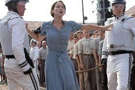
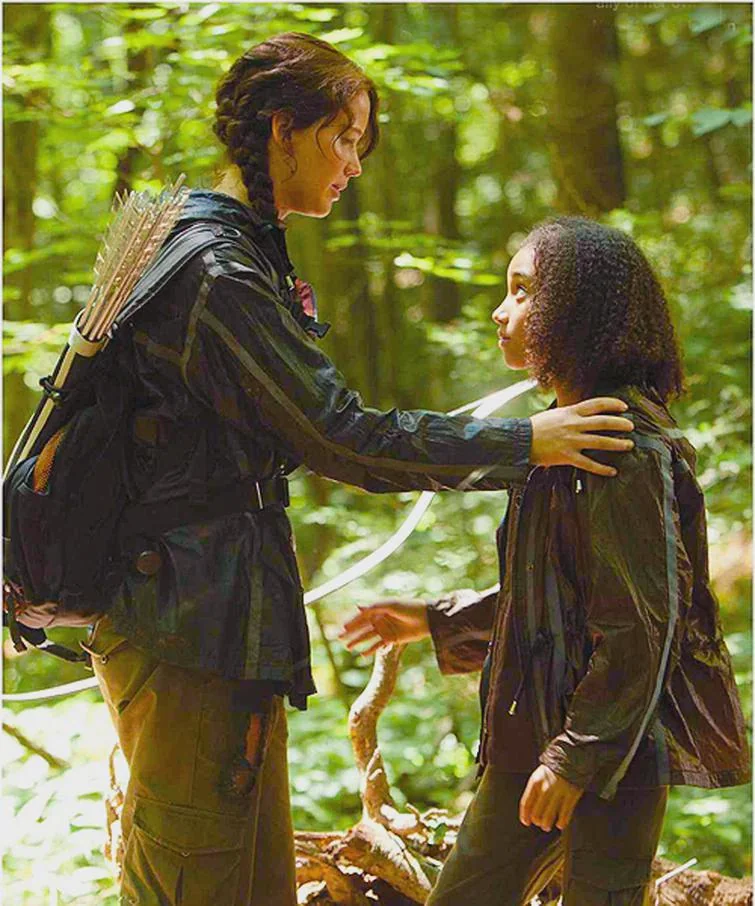

The Hunger Games: Trilogy
The Entertainment
In the hunger games trilogy, the story is set in a dystopian future where the Capitol of Panem maintains its hold on its 12 districts by forcing them to send tributes to participate in the annual Hunger Games, a fight to the death on live TV. Each district has a role to play by provinding resoucres to the Capitol. Some of the districts are wealthier and have more resources than others. All though the distrcist are divided, they all have one thing in common, they all have to fight to survive. The Hunger Games is a televised event in which the tributes must fight to the death until only one remains. The games are a form of entertainment for the Capitol citizens, who watch the tributes battle it out in a specially designed arena. The games are also a reminder of the Capitol's power and control over the districts, as the tributes are chosen by lottery.
The Mockingjay Arises
Katniss Everdeen becomes the face of the rebellion against the Capitol, known as the Mockingjay. She is the symbol of hope and resistance for the people of Panem, inspiring them to rise up against the Capitol. Katniss's first act of rebellion is when she voltunteers as Tribute for her sister Prim. She then goes on to the 74th Hunger Games, where she meets a young girl named Rue, who she becomes friends with. Rue is later killed by another tribute and Katniss honors her by covering her in flowers. This act of kindness and defiance sparks a rebellion in Rue's district, and Katniss becomes a symbol of hope. Later on in the games it is said that there can be two winners only if they are from the same district. When the rule is changed Katniss and Peeta decided to eat the posion berries to show the Capitol that they can't control them. This act of defiance is the final straw for the Capitol, and the rebellion begins.
The Alliance
Through the course of the trilogy, Katniss forms alliance with other tributes and rebels who help her in the fight against the Capitol. She is joined by her fellow District 12 tribute Peeta Mellark, who becomes her love interest and partner in the games. Katniss also forms a close bond with her mentor Haymitch Abernathy, who helps her navigate the treacherous world of the Hunger Games. Other allies include her best friend Gale Hawthorne, who becomes a symbol of the district's quiet rebellion, and Effie Trinket, the flamboyany Capitol representative who becomes unexpectedly supportive of Katniss. In the games she make alliance with a girl named Rue, after she saved Katniss's life from being attack by other tributes. Rue's district partner Thresh also helps Katniss by not killing her when he could have, because she showed kindness to Rue.